Avengers
Avengers

アイアンマン/トニー・スターク
「真実は…私がアイアンマンだ。」
アーマースーツを着て戦う天才的な頭脳の持ち主であり、発明家。兵器産業を続けていたが、悪事に利用されたため生産を中止、自ら開発したアーマーを着て悪事に立ち向かう。アーマーにはいくつものバージョンがあり、戦いを経る度に改良されている。

キャプテンアメリカ/スティーブ・ロジャース
「一人でも戦うが、一人ではないと信じてる。」
超人兵士計画の被験者。超人血清を打たれたおかげで元来抱いていた正義の心が強く反映されている。ビームを出す等の特殊能力は持たないが、人間の能力を極限まで高めた存在であり、あらゆる面でオリンピック級の実力の持ち主であると言われている。

ハルク/ブルース・バナー
「僕の秘密を教えようか。いつも怒ってる」
生化学や核物理学、ガンマ線の研究で知られている。ブルース博士は怒りによって別人格であるハルクへと変身する。”Hulk”は英語で「廃船の残骸」や「非常に大きな物、人」を意味し、怒りが大きければ大きいほどパワーが増す。

ホークアイ/クリント・バートン
「怖いならここに居ろ。外に出るなら戦え。一歩外に出たら、君はアベンジャーズだ」
S.H.I.E.L.Dの元特別エージェント。そしてアベンジャーズの創設メンバーの一人。何の特殊能力も持たないが、卓越した弓の技術を持ち、狙った的は外さない。矢じりには様々な仕掛けが施されており、それにより相手の意表を突くことが出来る。

ブラックウィドウ/ナターシャ・ロマノフ
「まったく男の子は散らかすのが好きなんだから」
諜報に関するあらゆる分野で訓練を積み、最新鋭の技術を装備している。S.H.I.E.L.Dの最重要エージェントの一人としていくつもの任務を成功させてきた。アベンジャーズのメンバーとしてその能力を悪に立ち向かう為に惜しみなく使用している。レッドルーム出身。

ソー・オーディンソン
「俺は偉大な男になりたい。偉大な王よりも。」
神の国アスガルドから来た、アスガルドの主神オーディンの息子であり雷神。ふさわしい者しか持ち上げる事の出来ないムジョルニアというハンマーと雷, そして鋼のような肉体を使って戦う。

スパイダーマン/ピーター・パーカー
「もし自分に何か出来るのに、しなかったら。それで悪いことが起きたら、自分のせいだって思う。困ってる人を助けたい。」
１５歳の高校生。全米学力コンテストチームに所属しており頭脳明晰。トビー版やアンドリュー版に比べてポジティブでお調子者であり、よく喋る。自らウェブシューターを作成し、自警活動をしていたところをアイアンマンに見つかり、Avengersへ招待される。それ以降はトニー・スタークと師弟関係のような状態となり、スーツも作ってもらった。自分の正体が知られると身近な人に危害が及ぶと考え、正体を隠し『親愛なる隣人』として活動している。

ドクター・ストレンジ/スティーブン・ストレンジ
「私ならもっと上手くやれる」
天才的神経外科医であるドクター・ステーブン・ストレンジは車の事故によって両手を負傷。そのせいで技術を失い、藁にもすがる思いで治療法を捜し歩いて放浪中、魔術の話を耳にする。そこで辿り着いた先にいたのがエンシェントワンであった。高い学習能力をもっていた為魔術の呑み込みが早く、みるみる成長を遂げ、至高の魔術師（ソーサラースプリーム）に選ばれるレベルの力を付けた。

アントマン/スコット・ラング
「家の中で１０歳の子と遊ぶには工夫がいるんだ」
元々空き巣泥棒だった。ある日老人の家に盗みに入ったものの、それは仕組まれた罠だった。盗みに入った家で見つけたスーツを着用した彼は、天才科学者；ハンク・ピム博士に諭され、娘の為に身体や物の大きさを自在にガジェットを使用し操るスーパーヒーロー・アントマンとなったのである。

ヴィジョン
「ウルトロンではない。ジャーヴィスでもない。私は…私です。」
映画「アベンジャーズ/エイジ・オブ・ウルトロン」にて、ウルトロンが新たな身体としてヴィブラニウムで創った器を横取りし、トニーの作った人工知能「J.A.R.V.S」を入れた結果誕生した。額にはインフィニティ・ストーンの一つであるマインド・ストーンが埋め込まれており、ビームを出したり自身の身体の密度を操ることで壁を通り抜けたりすることが出来る。

スカーレット・ウィッチ/ワンダ・マキシモフ
「あなたが私のすべてを奪ったのよ。」
映画「アベンジャーズ エイジ・オブ・ウルトロン」にて初登場。念力や思考操作等強力なテレキネシスパワーを持つ。故郷（ソコヴィア）をスタークインダストリーズの兵器によって破壊され、スタークに強い恨みを持つ。ウルトロンと協力してアベンジャーズの敵として立ちはだかるが、ホークアイに諭されアベンジャーズへと入る。
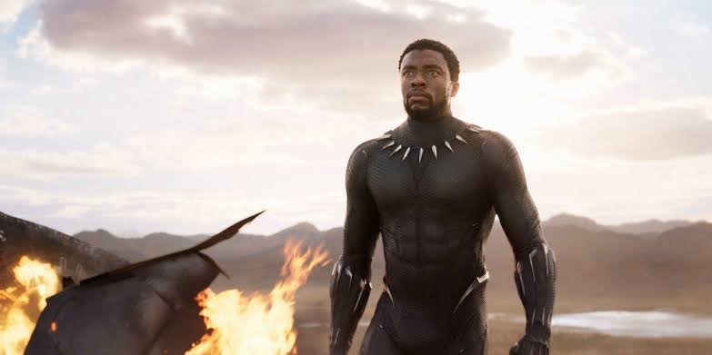
ブラックパンサー/ティ・チャラ
「賢い者は橋を架け、愚かな者は壁を作る」
映画「アベンジャーズ/シビル・ウォー」にて初登場した後単独作が公開。ワカンダ王国の国王であり、「ブラックパンサー」は襲名式の称号であるため個人を指さない。肉体はハーブで強化され、スーツはワカンダ王国の進んだテクノロジーを基にヴィブラニウムで作られている。衝撃を蓄積するヴィブラニウムの特性を生かし、蓄積した衝撃を任意で放つ事が可能。キャプテンアメリカ達の超人血清とこのハーブはどちらが強力なのかは不明。
S.H.I.E.L.D
S.H.I.E.L.D
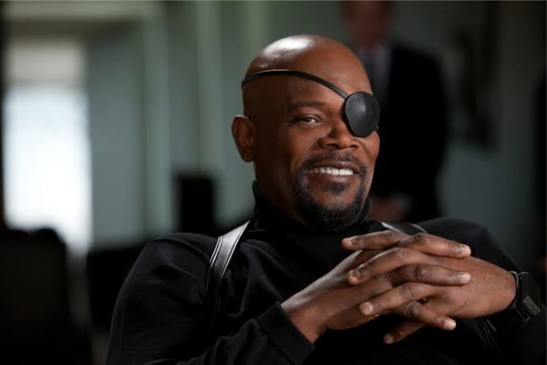
ニック・フューリー
「彼らは戻ってくる。我々が必要とするから。」
S.H.I.E.L.D tendernessの長官。アベンジャーズ計画の発案者であり、アベンジャーズの創設者にあたる。自ら選んだメンバーを勧誘しに向かう。左目の眼帯の下には三本の傷跡があり、本人曰くかつて信じてた友人に裏切られたとあるが、真相は映画「キャプテン・マーベル」にて明かされる。
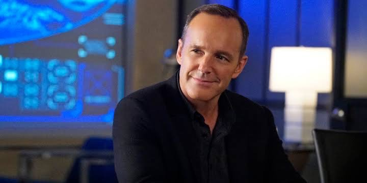
フィル・コールソン
「人は行動でヒーローになる」
国際平和維持組織S.H.I.E.L.Dのエージェント。キャプテンアメリカのファンで、ドラマ「エージェント・オブ・シールド」でチームを率いる。
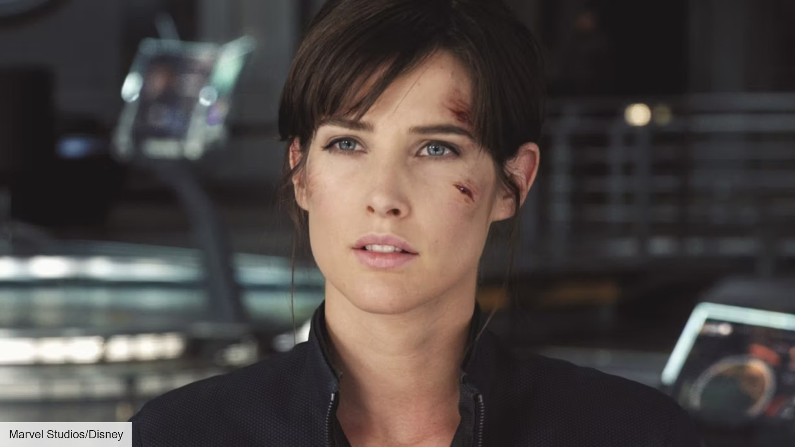
マリア・ヒル
「あなたに仕えられて光栄です」
国際平和維持組織S.H.I.E.L.Dの副長官。主にニック・フューリーの右腕として活躍する。アベンジャーズの補佐も務めており、優秀な人材。
Guardians of the Galaxy
ガーディアンズ・オブ・ギャラクシー

スターロード/ピーター・クイル
「俺はピーター・クイル。別名『スター・ロード』」
幼くして母親を失い、悲しみから外に飛び出た所を宇宙海賊ラヴェジャーズに拉致され、そのままリーダーであるヨンドゥに育てられた。のちにガーディアンズ・オブ・ギャラクシーを率いるリーダーとなる。

ガモーラ
「私はサノスの娘ではない。自分の道を歩む。」
幼いころに故郷の星をサノスに襲われ、両親を目の前で殺された。サノスに引き取られた後、義妹のネビュラと共に手術と訓練により少しづつ身体は改造され、強力な人間兵器へと変えられた。しかし、訓練でネビュラに勝つ度彼女の身体は機械に改造されていき、恨まれている事に気が付かなかった。

グルート
「アイ・アム・グルート」
アイとアムとグルートしか喋る事の出来ない樹木巨人。ロケットと行動を共にしていた期間が長いようで、ロケットには伝わる。作品を通して一緒に過ごす事で、ガーディアンズオブギャラクシーのメンバーも言ってる事を理解するようになっていく。

ロケット
「俺をアライグマと呼ぶな！」
どこからどう見てもアライグマだが、アライグマだというと怒る。グルートとは長らく一緒にいるようで、グルートの言葉が理解できる。天才的な頭脳の持ち主であり、乗り物の操縦がとても上手い。生い立ちは「ガーディアンズオブギャラクシー３」にて語られる

ドラックス・ザ・デストロイヤー
「俺の辞書に『降伏』の文字はない。」
故郷の惑星で、妻子と共に幸せな日々を送っていたが、クリー人であるロナンの侵略により家族を殺されてしまい、すべてを失った。その後、ロナンへの復讐を果たすべく銀河を飛び回り、ロナンの手手下を見つけては手あたり次第に殺していき、その数は数十人以上となる。しかしノバ軍に逮捕され、キルン刑務所へと収監されてしまう。

マンティス
「あなたの心が、私に伝わってくる。」
頭に二つ触覚が生えており、他人に触れるとその人の感情を自身に反映させることが出来る。逆に自分の感情等相手に伝えることで睡眠状態にすること等が可能。エゴの子供たちのうちの一人であり、ピーターとは腹違いの兄妹にあたる。
Fantastic Four
ファンタスティック・フォー

ミスター・ファンタスティック/リード・リチャーズ
「未知の領域へ進むんだ、4人で一緒に。」
天才的な科学者であり、ファンタスティック・フォーのリーダー。宇宙線を浴びたことで、身体をゴムのように自在に伸縮・変形させる能力を得た。その頭脳は驚異的で、トニー・スタークを超える頭脳を持つ。マルチバースや量子力学の研究において並ぶ者はいない。
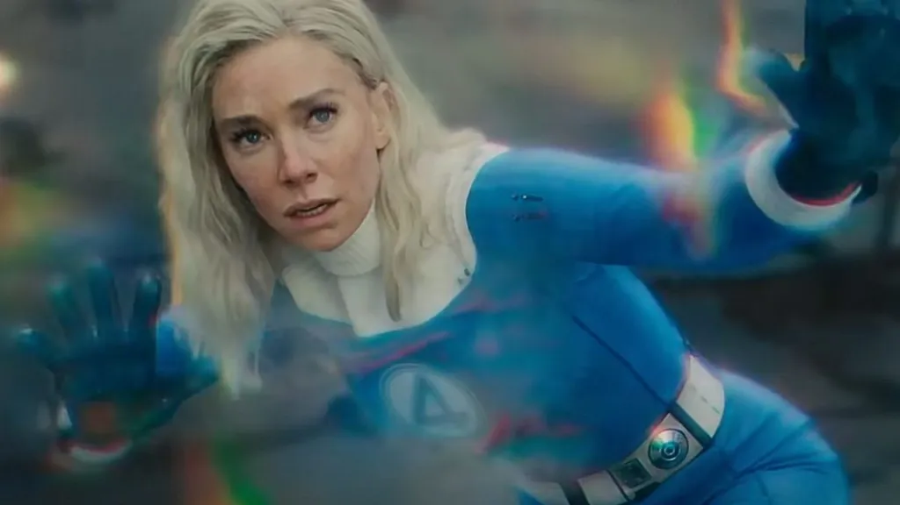
インビジブル・ウーマン/スー・ストーム
「私たちを甘く見ないで。」
リードの妻。自身の身体を完全に透明化する能力と、強力な目に見えないエネルギーの防護壁（フォースフィールド）を展開する能力を持つ。チームの精神切支柱であり、攻守ともに最強クラスの戦闘力を持つ。

ヒューマン・トーチ/ジョニー・ストーム
「ほら言えよベン。何の時間だ？」
スーの弟で、破天荒でお調子者の青年。全身を灼熱の炎で包み込み、飛行する能力を持つ。炎を放って攻撃するだけでなく、周囲の熱を吸収することも可能。ピーター・パーカーを思わせるような性格をしており、恐らく気が合うと思われる。

ザ・シング/ベン・グリム
「お仕置きの時間だ！」
リードの親友であり、元腕利きのパイロット。宇宙線の影響で全身が強固な岩石のような皮膚に変貌し、圧倒的な怪力を手に入れた。その容姿に葛藤を抱えつつも、人一倍不器用で優しい心を持つチームのタフガイ。
Thunderbolts*
サンダーボルツ*
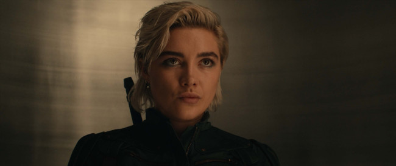
エレーナ・ベロワ
「私たちはヒーローじゃない。でも、やるべきことをやる」
ナターシャ・ロマノフの「妹」であり、同じくレッドルームで育てられた超一流のアサシン。暗殺・格闘技術においてナターシャに引けを取らない実力を持つ。どこか冷めているが根は情に厚く、サンダーボルツの実質的な中心人物。
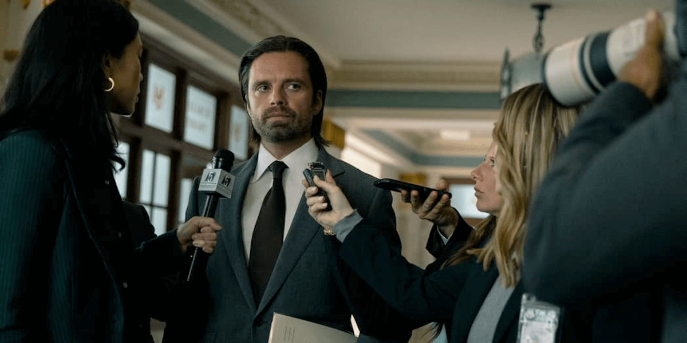
ウィンター・ソルジャー/バッキー・バーンズ
「過去からは逃れられないが、未来は変えられる。」
キャプテン・アメリカ（スティーブ）の往年の親友。ヒドラによって洗脳され「ウィンター・ソルジャー」として暗躍させられていた過去を持つ。左腕の頑強なヴィブラニウム製義手と、超人血清による高い戦闘能力を持つ。訳ありのメンバーが集まるサンダーボルツを率いる立場となる。
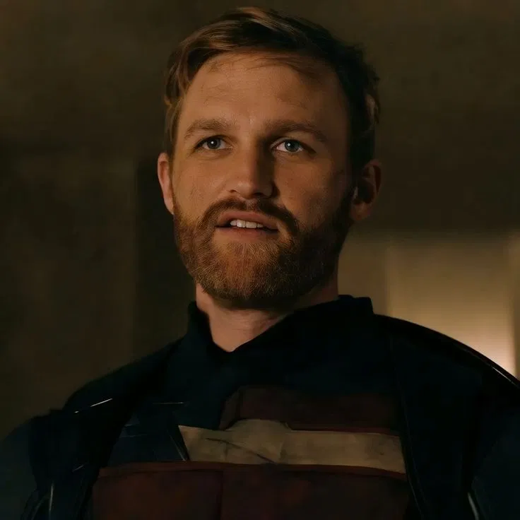
USエージェント/ジョン・ウォーカー
「俺はキャプテンアメリカだ」
かつて政府から「2代目キャプテン・アメリカ」に任命された元軍人。過剰な正義感とプレッシャーから事件を起こし剥奪されたが、超人血清の力と高い戦闘技術は健在。現在は星条旗を模した黒いスーツを纏い、USエージェントとして前線に立つ。
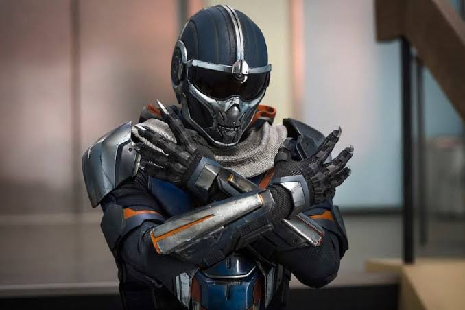
タスクマスター/アントニア・ドレイコフ
「関係ない人はおとなしくしてて」
相手の動きをキャプチャ（分析）し、キャプテン・アメリカやホークアイ、ブラック・ウィドウなどの戦闘スタイルを完全にコピーして戦う能力の持ち主。映画「ブラックウィドウ」にてレッドルームの呪縛から解き放たれ、ヴァレンティーナのミッションを受け保管庫に向かう。
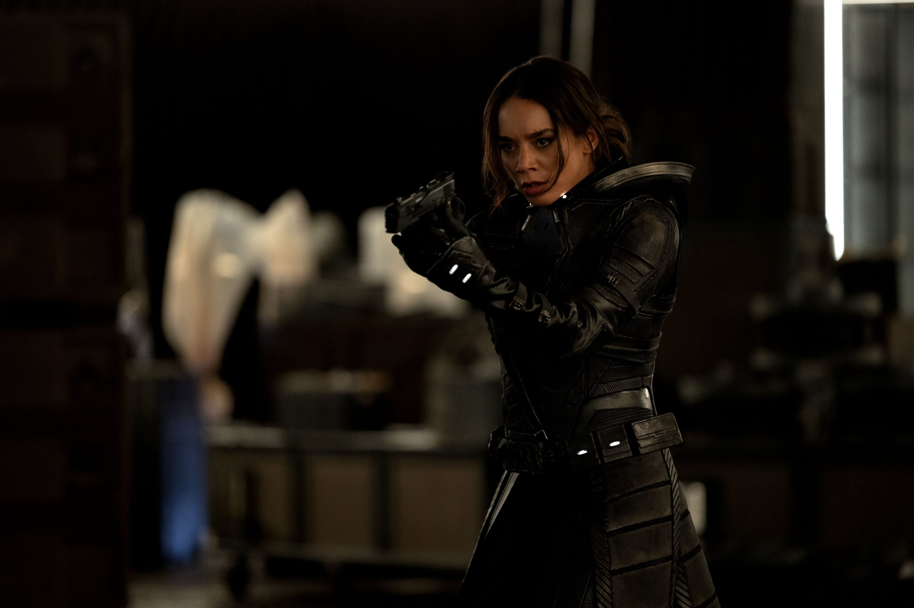
ゴースト/エイヴァ・スター
「私の苦しみが、あなたに分かる？」
量子実験の事故により、身体の分子が不安定化し、あらゆる物質をすり抜ける能力を得た女性。その特異体質ゆえに常に激痛を伴うが、ステルススーツを纏い、フェージング能力を駆使した奇襲攻撃を得意とする。
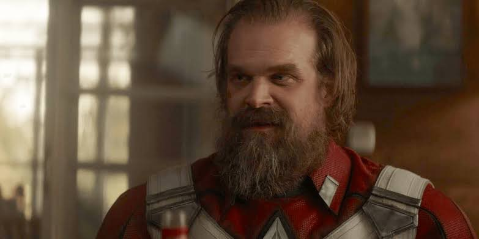
レッド・ガーディアン/アレクセイ・ショスタコフ
「ロシアのキャプテン・アメリカ、それが俺だ！」
ロシアがキャプテン・アメリカに対抗して生み出した元祖・ソ連の超人兵士。ナターシャやエレーナにとっては「父親」のような存在。全盛期を過ぎて体型は崩れているが、超人血清による凄まじい怪力とタフさは今なお健在。
セントリー/ヴォイド/ボブ
「あなたがキャップ？」『なにがおかしい』「だってあなた、やなヤツなのに笑」
ヴァレンティーナの治験という名の人体実験”セントリー計画”により誕生した。太陽1000個分のパワーを持っており、彼女によるとアベンジャーズ全員を合わせたよりも強い。味方としては非常に心強いものの、強すぎる光には濃い影が出来るように「ヴォイド」という人格も同時に作られてしまう。ヴォイドは手をかざすだけで相手を影にし、本人にとってのトラウマを再現した空間に閉じ込める。
The Defenders
ディフェンダーズ (ストリート・ヒーロー)

デアデビル/マット・マードック
『今のどうやったの？』「腕が良いんだ。」
昼は盲目の弁護士、夜は「ヘルズ・キッチン（地獄の台所）」を守る自警団の顔を持つ男。幼い頃の事故で視力を失った代わりに、残された四感が超人的に研ぎ澄まされ、レーダーのように周囲を把握する。圧倒的な格闘センスと不屈の精神で街の闇に立ち向かう。法で裁けない悪を相手取る。
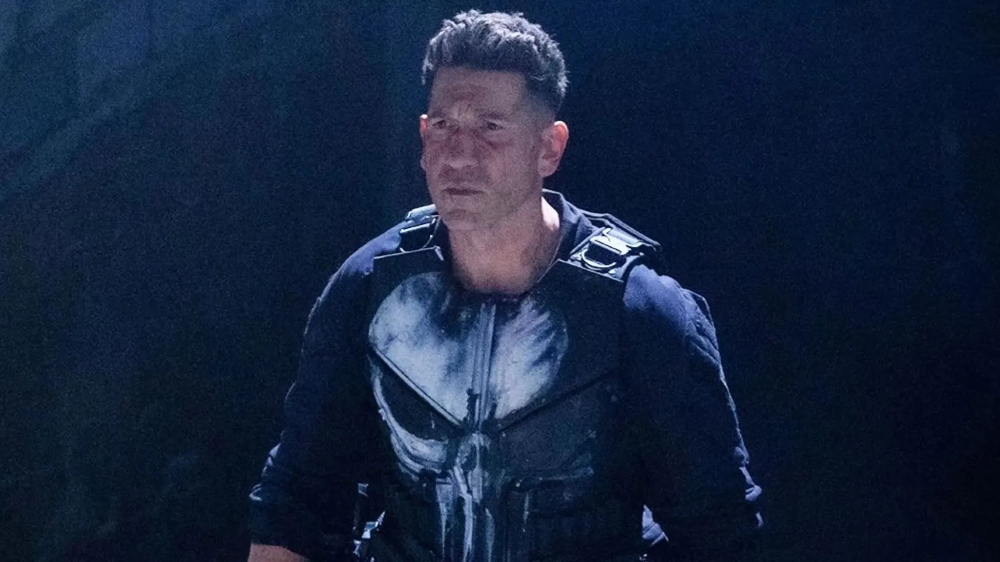
パニッシャー/フランク・キャッスル
「お前たちが始めたことだ。俺がすべてを終わらせる。」
最愛の家族をギャングの抗争で虐殺された元海兵隊の凄腕軍人。悪党を絶対に生かしてはおかない「容赦なき処刑人」であり、超能力は持たないが、高度な軍事戦術と各種兵器の扱いを極めた、マーベル作品の中でも最も過激なダークヒーロー。
X-MEN
X-MEN (ミュータント)
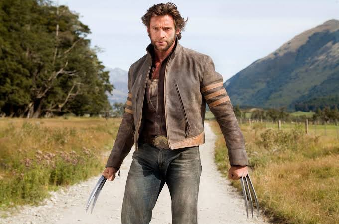
ウルヴァリン/ローガン
「なんか言ってみろ」
いかなる致命傷からも超高速で再生する能力「ヒーリング・ファクター」を持つ孤高のミュータント。過去の実験により、全身の骨格に地球最強の超金属「アダマンチウム」を埋め込まれており、両拳の隙間から鋭利な爪を突き出して戦う。
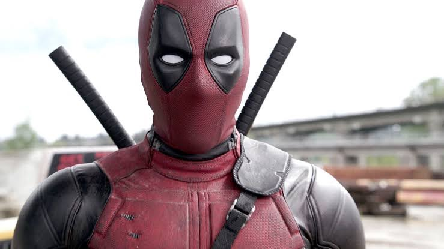
デッドプール/ウェイド・ウィルソン
「外反母趾」
人体実験によりウルヴァリン譲りの桁外れの再生能力を手に入れた、お喋りで破天荒な傭兵。自分が「映画や漫画のキャラクターであること」を認知しており、観客（画面の向こう）に話しかけてくる「第四の壁」を突破する能力を持つ。
Spider-Man Legacy Villains
歴代スパイダーマン・ヴィラン

ヴァルチャー/エイドリアン・トゥームス
「世界は変わった、俺たちも変わるべきだ。」
一般人。映画アベンジャーズにて崩壊したNYの残骸回収作業に携わっていたが、トニー・スタークと政府の合併会社に仕事を奪われ、トニー・スタークに強い恨みを持つ。その後父親として家族の生活を守る為に悪事に手を染めていく。

ドクターオクトパス/オットー・オクタビアス
「太陽の力が我が手の中に」
神経系インターフェイスにより四本の触手型金属アームを操りスパイダーマンの敵として立ちはだかる存在。本人はなんの能力も持たないが、神経系インターフェイスを通じて触手により脳を支配され、ヴィランとなる。

エレクトロ/マックス・ディロン
「よぉスパイダーマン。」
アメイジングスパイダーマンに登場。電気ウナギの水槽に落ちて電気人間となった。電気エネルギーそのものであり、スパイダーマンが糸を飛ばしても通り抜けた。

サンドマン/フリント・マルコ
「私は悪人ではない。ただ、運が悪かっただけだ。」
娘の命が危険な状態であったため、金が必要だったフリントは、相棒と共に強盗を企てた。フリントはピーター・パーカーの叔父ベンの乗っていた車を奪おうとしたが、ベンにやめるよう諭された。そこに相棒が駆け寄ってきて、フリントの握っていた銃が暴発し、ベンを殺してしまった。フリントはこの事件で捕まっていたが、脱獄し娘に会いに行くも妻に追い出されてしまう。警察に追われたフリントは素粒子物理実験場の柵を超え、穴に落ち、分子分解の実験に巻き込まれて全身が砂になってしまった。

グリーンゴブリン/ノーマン・オズボーン
「お前には何も守れない。」
ノーマン・オズボーンは科学者であり、オズコープ社の社長でもある。彼は人体パワー増強薬の研究を進めていて、ネズミを使った実験ではパワーが８倍に上がった。しかし１例で凶暴性・攻撃性・錯乱状態の副作用が見られた。軍からは２週間以内に人体実験が成功しなければ研究資金を他社に回すと言われてしまったため、共同で研究していた博士の反対を押し切り、自らを実験台として薬を吸引。肉体の効果には成功したが、副作用により、凶暴な人格が生まれてしまう。ノーマンにとって邪魔な存在は別人格であるグリーンゴブリンによって消されていくが、彼自身は別人格がしたことを知らない。

ニューゴブリン/ハリー・オズボーン
「父の仇だ」
ある夜、スパイダーマンがノーマンの遺体を屋敷に運び込んだのを目撃したハリーは、スパイダーマンが父親を殺したと思い込む。その夜、ハリーの中に生きているノーマンが屋敷の鏡に現れ、ハリーに復讐を呼び掛けた。反対したハリーがナイフを投げて鏡を砕くと、ノーマンがグリーンゴブリンとして使っていた装備や、人体強化薬のある部屋につながっていた。ハリーはノーマンと異なる装備やグライダーを揃え、薬を吸引。スパイダーマンへの復讐を目的とする。

リザード/カーティス・コナーズ博士
「人類は進化すべきだ」
右前腕を欠損しており、オズコープ社で働く。ピーター・パーカーと打ち解け、研究が進みはしたものの、同僚から人体実験の結果を急かされてしまう。まだ危険な段階だと反対するも会社を解雇されかけ、自身の身体を実験に使う。無事右前腕は再生したものの、完全に馴染む事はなくトカゲの怪物へと変貌する。

ミステリオ/クエンティン・ベック
「僕は真実を操作する。僕こそがミステリオだ。」
元トニー・スタークの部下であり、トニーからピーター・パーカーに渡ったE.D.I.T.Hグラスを奪う為にあらゆる技術を使ってピーターを懐柔し、E.D.I.T.Hグラスを奪う事に成功。トニー・スタークのドローンを使い、大規模な立体映像で敵を創り出し、スパイダーマンと対決する。
Sony's Spider-Man Universe
SSUキャラクター

ヴェノム
「俺たちはヴェノムだ」
ライフ財団が持ち帰った地球外生命体（シンビオート）のうちの一個体。寄生する宿主を見つけなければ生きられない為、現在エディ・ブロックに寄生している。好物は人間の脳みそとチョコレート。高い再生能力や形状変化能力を持ち、腕を硬質化したり触手等を出して戦う。超音波や炎が弱点。

ブラックスーツヴェノム
「キシャァァァァァァァァ！！！！」
スパイダーマン３で出てきたヴェノム。隕石によって宇宙から地球へと降り立ち、始めはスパイダーマンのブラックスーツとして登場。このスーツを着ると気分が高揚し、破壊衝動が強くなる。ピーターは教会の鐘を使ってなんとか自身から引きはがしたものの、下にいたエディ・ブロックに寄生。映画のヴェノムとは別物であるが、世界の壁をまたぐ記憶共有能力により映画のヴェノムもスパイダーマンの存在を認知している。

カーネイジ/クレタス・キャサディ
「大殺戮（カーネイジ）だ」
面会に来たエディ・ブロックの指を噛み、その血を舐めた事でクレタス・キャサディの体内にヴェノムの一部が混入・寄生した姿。寄生されたキャサディもさることながら、新たに生まれたシンビオート自体も凶悪であることから、他のヴィランに比べて純度１００％の悪役となった。性格は残忍にして狡猾、嗜虐的であり凶暴である。

ライオット/カールトン・ドレイク
「人類の進化には、犠牲が必要だ。」
天才的な起業家で、億万長者。24才で革命的な遺伝子療法を開発しライフ財団を創設、最高経営責任者となる。地球の気候変動の問題から、宇宙探査機を飛ばして人類が住める惑星を探していた所、探査機の一機が地球外生命体を持ち帰った。そのうちの一個体が寄生してライオットとなった。
マダムウェブ/キャシー・ウェブ
「いいから私の言う事聞きなさい」
NYで救命士として働いていたキャシーは、生死の境を彷徨う事故に合った影響で未来予知の能力を得る。突然の事に混乱していたキャシーだが、ある時偶然出会った３人の少女が黒いマスクとスーツの男に殺される悪夢のような未来を観た事で、図らずもその男から少女三人を守る事となる。
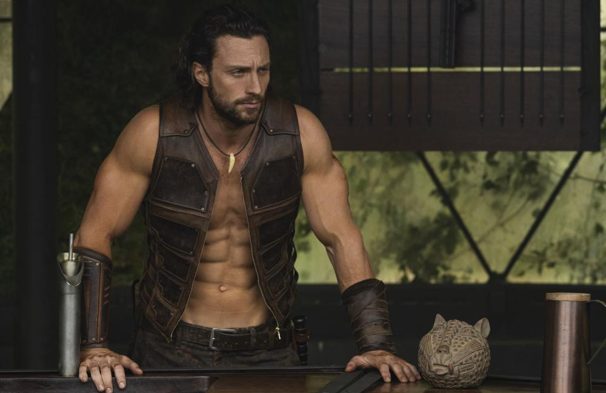
クレイヴン・ザ・ハンター/クレイヴン
「人類の進化には、犠牲が必要だ。」
幼い頃に裏社会を牛耳る冷酷な父と狩りに出かけた際、巨大なライオンに襲われた。それをきっかけとして百獣の王の力を手に入れ、自身の父が世にもたらした悪を始末するという目的を抱いたクレイヴンは、金のために動物を殺める人間を狩り始める。一度狙った獲物は決して逃さず、どこまでも追い続ける。身体能力は恐らくキャプテンら超人血清組や、ブラックパンサー達ハーブ組と同等レベルであると考えられる。
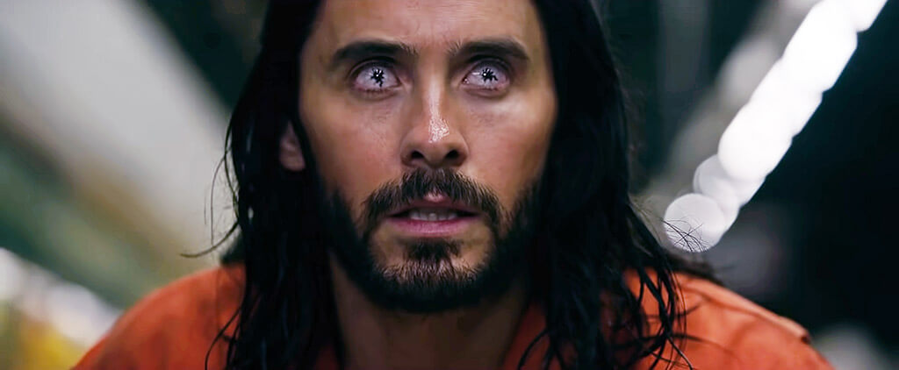
モービウス/マイケル・モービウス
「人類の進化には、犠牲が必要だ。」
治療法の無い血液の難病を抱える天才医師が、自身の命を救うために危険な実験を行う。結果、超人的な力と吸血衝動に襲われてしまう。医師としての使命感と怪物としての宿命の狭間でもがく
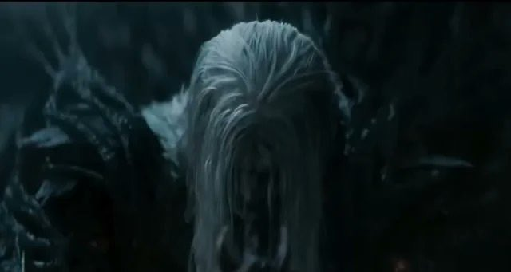
ヌル
「コーデックスを探せ」
ヴェノム達シンビオートの生みの親、闇の帝王。あまりに危険すぎる為シンビオート達が協力し惑星クリンターにヌルを監禁する。惑星とは言うものの実態は専用の巨大な監獄である。監獄から抜け出す為に必要な鍵であるコーデックスを持つヴェノムとエディを狙い追手を仕向ける。
MCU Villains
MCUヴィラン

ロキ・ラウフェイソン
「全てのトリックは私が作った」
映画「アベンジャーズ」にてサノスの手手下としてチタウリを引き連れニューヨークを襲撃。ヨトゥンヘイムの霜の巨人の王ラウフェイの息子。神の国アスガルドでソーの弟として育てられた。裏切りの神・悪戯の神である。

ウルトロン
「お前達全員対私全員。願ってもない戦いだ。その数でどうやって私を止める？」
映画「アベンジャーズ/エイジ・オブ・ウルトロン」にて登場。トニー・スタークが世界中にアーマーを配置し、世界の安全を守ろうとしてAIを作った結果、人間を守る価値がないと判断したウルトロンは逆に配配備されたアーマーを操り人類を滅ぼす為に動き出した。ファンの間では考察として、考え方や思想がヒドラに似ている為、ヒドラの研究施設からデータを持ち帰った際、そこで作っていたAIをトニーが気が付かず回収、起動してしまったのではと噂されている。

チタウリ
「（咆哮）」
映画「アベンジャーズ」にて登場。宇宙人の種族であり、サノスに従属している。ロキの手先として地球に侵攻し、無慈悲に人々を襲う。

サノス
「小さな代償で大勢を救っただけだ。これは簡単な計算だ。宇宙は限られてる。資源も限られてる。命が増えるがままにしておいたら、やがては全滅する。修正が必要なんだ。」
映画「アベンジャーズ」から「エンドゲーム」までのアベンジャーズのメインヴィラン。人口増加のせいで物資が足りず滅びゆく姿をみて、半分の命を消してもう半分の命を救おうと考えた。そのために必要なインフィニティ・ストーンを探し求め、数多の星を滅ぼし虐殺を繰り返しながら宇宙の生命を消していった。

征服者カーン/ナサニエル・リチャーズ
「お前には娘が居て、お前はアベンジャーズで。私は以前お前を殺したかな？」
映画「アベンジャーズ/カーン・ダイナスティ」にてメインヴィランとして君臨する予定だったが脚本変更により映画「アントマン/クワントマニア」でのヴィランに留まった。ドラマ「Loki」では”在り続ける者”として登場。３０世紀に生まれており、超常的なパワーは持たないが、未来人ということもあって最先端の知識と優れた頭脳を持ち、未来の科学技術を使う。タイムトラベル技術を使って、さまざまな時代や場所に移動し、その世界で別の名前を名乗っている事もある。別の次元で何度もアベンジャーズと戦い勝利していることが示唆されている
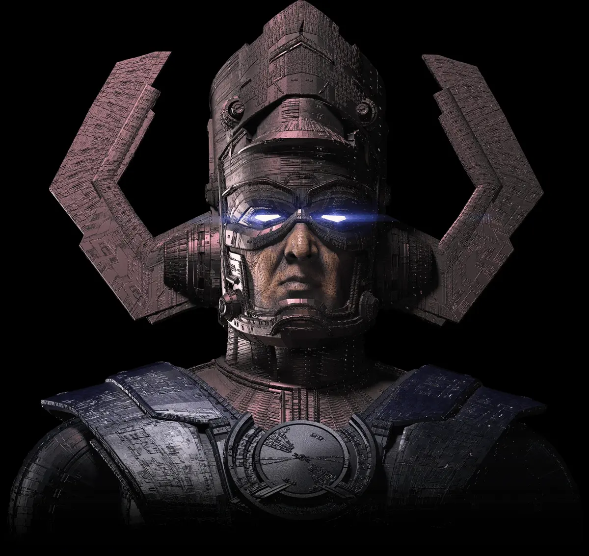
ギャラクタス
「私の飢えが、この世界を喰らい尽くす。」
映画「ファンタスティック・フォー/ファースト・ステップ」にて登場。惑星を破壊してその星のエネルギーを喰らう。
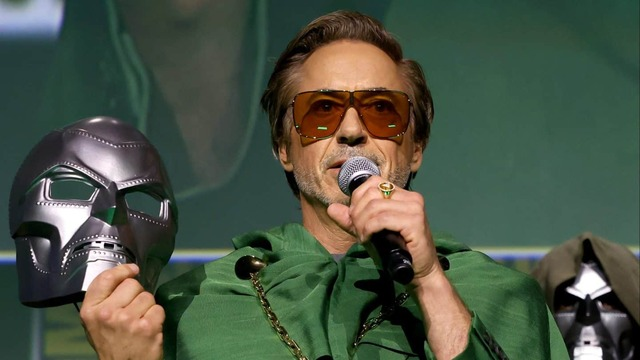
ドクター・ドゥーム
「ドゥームの前にひれ伏せ。」
映画「アベンジャーズ/ドゥームズデイ」にて登場予定。映画「ファンタスティック・フォー/ファースト・ステップ」のポストクレジットにて初登場を果たした。